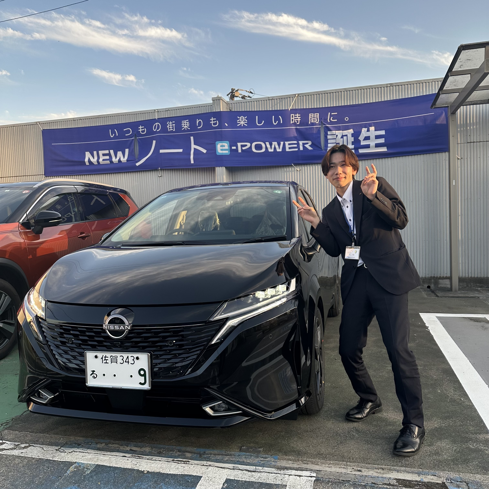
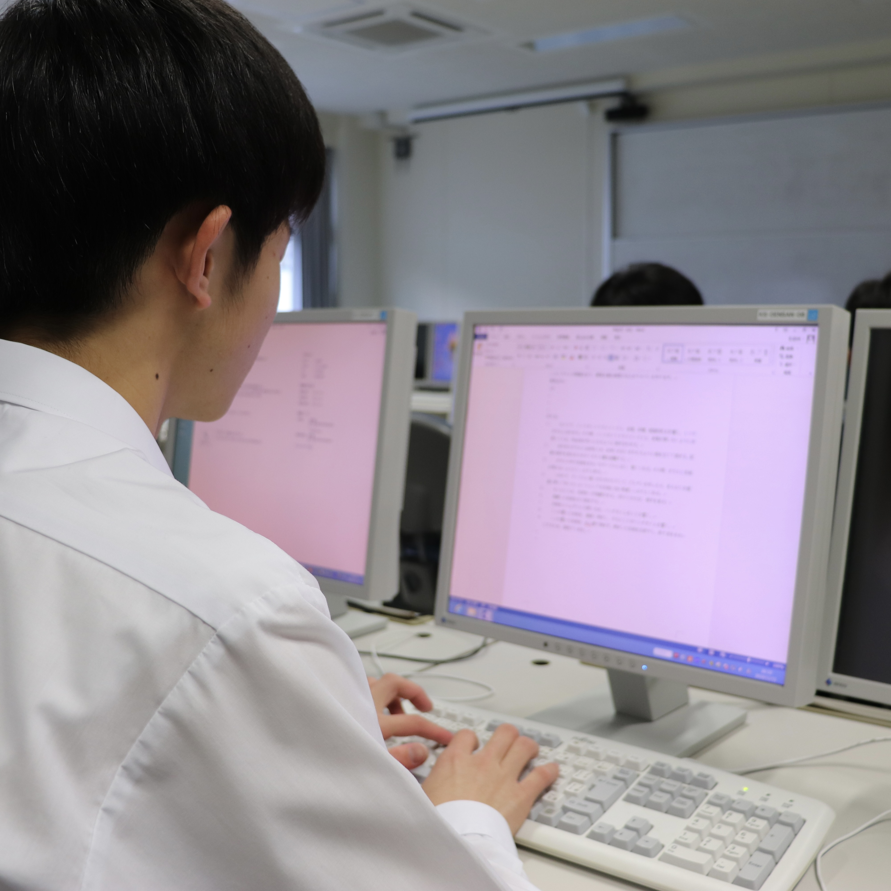
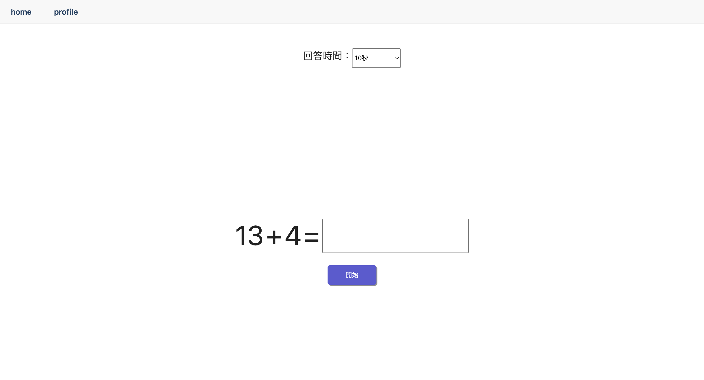
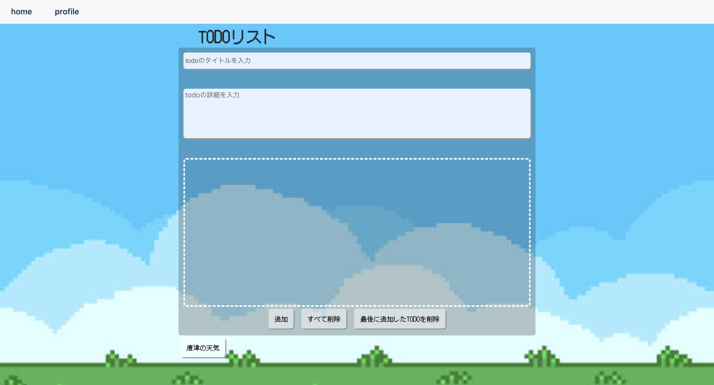

自動車営業職
取扱商品 新車 中古車 自動車保険...etc
自動車販売を中心とした営業業務を担当。
新車・中古車の提案から、契約後のアフターフォローまで一貫して対応し、
お客様との長期的な信頼関係構築を重視した営業活動を行っています。

高校時代、情報の授業でEXCELの関数に触れた際に、膨大なデータをボタン一つで扱うことができるということに
強い感動を覚えました。そこから、効率化というところにも興味を持ち、自分でウェブサイトを作成してみたいという
好奇心からプログラミングについての勉強を始めました。
現職での業務を通じて課題解決や業務効率化に携わるようになり、より専門性を身につけたい
と考える様になりました。
そこで、物事に対する探究心や論理性を活かせるIT分野で技術力を高めたいと考え、
IT業界への転職を志望しました。
まずは、日々の勉強と業務での経験で、システムエンジニアとして基礎能力の向上、また、
営業職で培った課題解決能力やコミュニケーション能力を活かして、３年以内にチームをまとめる
リーダーとしてのポジションに付くことを目指しています。

